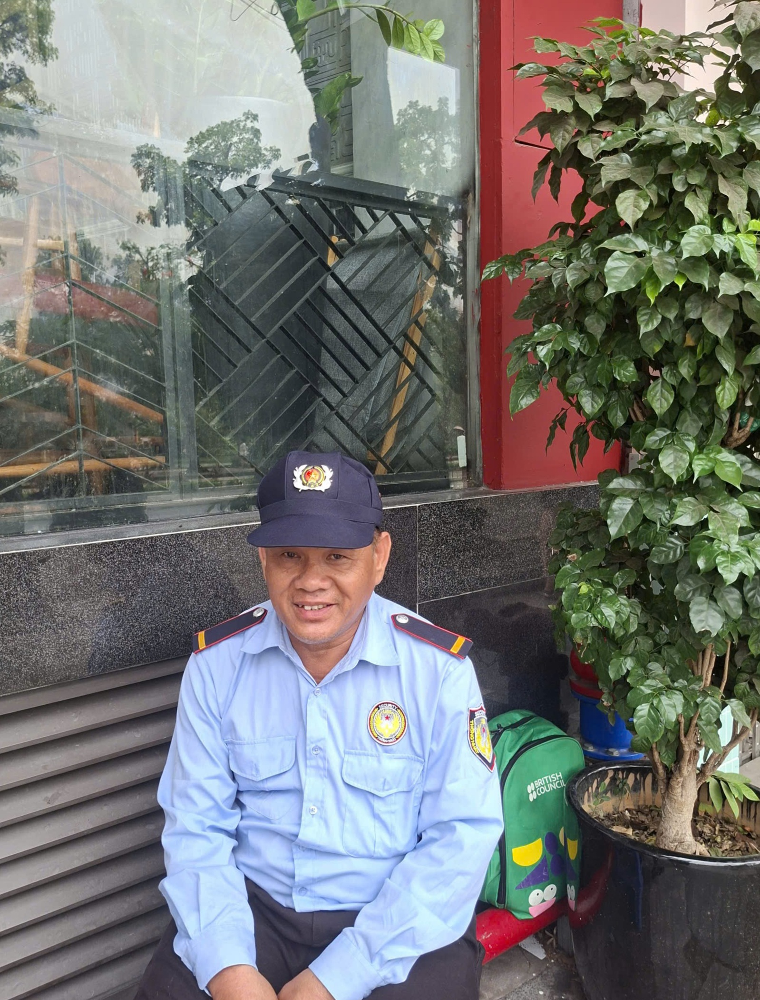

Tiếp nối hành trình của “GÁNH&GỒNG”, chúng mình lựa chọn lắng nghe những góc nhìn từ nam giới thuộc nhiều thế hệ khác nhau — từ học sinh, sinh viên đến những người đã lập gia đình và các bác lớn tuổi — để hiểu hơn về cách đàn ông nhìn nhận những áp lực của phụ nữ.
Qua những cuộc trò chuyện, chúng mình thấy có người cho rằng phụ nữ đang phải chịu áp lực “gấp đôi” khi vừa đi làm vừa quán xuyến việc nhà. Có người nhìn nhận rằng những định kiến như “giỏi việc nước, đảm việc nhà” đã vô tình khiến phụ nữ luôn cảm thấy mình phải hy sinh và gồng gánh nhiều hơn. Cũng có những người thừa nhận rằng trước đây đàn ông thường ít chia sẻ việc nhà, nhưng hiện nay sự đồng hành giữa vợ và chồng đang trở thành yếu tố quan trọng để giữ gìn hạnh phúc gia đình.
Đặc biệt, một tín hiệu đáng mừng là ở thế hệ trẻ, many bạn đã không còn xem việc nhà hay chăm sóc gia đình là trách nhiệm mặc định của riêng phụ nữ. Thay vào đó, họ nhìn nhận đây là sự sẻ chia và đồng hành giữa cả hai phía trong một gia đình hiện đại.
Điểm chung trong những chia sẻ ấy là sự thấu hiểu: Việc nhà không nên là trách nhiệm mặc định của riêng phụ nữ và một gia đình hạnh phúc cần được xây dựng bằng sự sẻ chia từ cả hai phía.
1. Học sinh
Bạn Nguyễn Minh Sơn, 15 tuổi, đến từ Bắc Ninh
1. Khi nhìn phụ nữ vừa đi làm vừa chăm lo gia đình, em có thấy họ đang chịu nhiều áp lực không?
→ Em thấy là phụ nữ đang chịu rất nhiều áp lực đến từ cả hai phía: công việc ngoài xã hội đến công việc nội trợ trong gia đình.
2. Theo em, tại sao dù xã hội đã hiện đại hơn, nhưng người phụ nữ vẫn thường là người tự mặc định mình phải chu toàn mọi việc trong nhà? Có phải do chúng ta đã đặt lên vai họ quá nhiều kỳ vọng ngay từ nhỏ không?
→ Từ trước đến nay, phụ nữ Việt Nam thường bị gắn cho một câu nói “giỏi việc nước, đảm việc nhà”. Em nghĩ là điều này xuất phát từ sự kỳ vọng của xã hội, bắt buộc người phụ nữ phải gánh vác hết trách nhiệm mà không được lựa chọn theo sở thích, mục tiêu cá nhân.
Bạn Nguyễn Minh Sơn - Học sinh THPT Yên Phong số 1, Bắc Ninh
3. So với thế hệ trước, nam giới hiện nay đã tham gia nhiều hơn vào việc gia đình. Em thấy sự thay đổi này mang lại giá trị gì lớn nhất cho hạnh phúc của một gia đình hiện đại?
→ Em nghĩ là việc nam giới đang tham gia nhiều hơn vào các công việc gia đình đã gánh bớt một phần áp lực cho người phụ nữ, đồng thời, khiến cho công việc nội trợ được cân bằng hơn.
4. Em muốn nhắn gửi lời chúc hay lời động viên nào chân thành nhất đến những người phụ nữ đang “gánh và gồng” mỗi ngày, để họ cảm thấy nhẹ lòng và hạnh phúc hơn với chính mình?
→ Hãy biết quan tâm, chăm sóc và sống vì chính mình. Luôn có mục tiêu, có định hướng cá nhân và không phải vì công việc gia đình hay chăm sóc người khác mà bỏ bê bản thân. Không nên vì những chuẩn mực của xã hội mà làm trái lại nguyện vọng, mong muốn của mình.
2. Sinh viên
Ẩn danh
1. Khi nhìn phụ nữ vừa đi làm vừa chăm lo gia đình, bạn có thấy họ đang chịu nhiều áp lực không?
→ Khi mình nhìn thấy người phụ nữ vừa phải đi làm, vừa chăm lo gia đình, mình thấy rất áp lực và vất vả. Mình nghĩ rằng, muốn gia đình hạnh phúc thì người đàn ông phải giúp đỡ nhiều hơn trong công việc, họ phải biết quan tâm, cảm thông cho người phụ nữ.
2. Theo bạn, tại sao dù xã hội đã hiện đại hơn, nhưng người phụ nữ vẫn thường là người tự mặc định mình phải chu toàn mọi việc trong nhà? Có phải do chúng ta đã đặt lên vai họ quá nhiều kỳ vọng ngay từ nhỏ không?
→ Mình nghĩ là dù xã hội hiện đại hơn nhưng nhiều quan niệm cũ vẫn ảnh hưởng rất mạnh đến phụ nữ từ khi còn nhỏ. Con gái thường được dạy phải biết hy sinh, chăm lo gia đình và chu toàn mọi việc, nên lâu dần họ tự xem đó là trách nhiệm của mình. Bên cạnh áp lực từ xã hội và gia đình, many phụ nữ cũng tự đặt tiêu chuẩn quá cao cho bản thân.
3. So với thế hệ trước, nam giới hiện nay đã tham gia nhiều hơn vào việc gia đình. Bạn thấy sự thay đổi này mang lại giá trị gì lớn nhất cho hạnh phúc của một gia đình hiện đại?
→ Đối với mình, việc nhà là trách nhiệm của tất cả thành viên trong gia đình, không kể nam hay nữ. Không chỉ là trách nhiệm của người phụ nữ mà còn phải có sự đồng hành của người đàn ông. Có như vậy thì việc nhà mới có thể nhẹ nhàng, được giải quyết nhanh chóng và bớt đi cảm giác áp lực của người phụ nữ. Thông qua những hành động san sẻ đó, tình cảm gia đình cũng sẽ ngày càng hạnh phúc hơn.
4. Bạn muốn nhắn gửi lời chúc hay lời động viên nào chân thành nhất đến những người phụ nữ đang “gánh và gồng” mỗi ngày, để họ cảm thấy nhẹ lòng và hạnh phúc hơn với chính mình?
→ Không cần phải mạnh mẽ và hoàn hảo mọi lúc mới là một người phụ nữ giỏi. Những cố gắng thầm lặng mỗi ngày đã rất đáng trân trọng rồi. Hy vọng những người phụ nữ ngoài kia biết yêu thương bản thân nhiều hơn, học cách nghỉ ngơi khi mệt và đừng tự tạo áp lực phải “gồng” một mình. Mong mỗi người phụ nữ đều được sẻ chia, được lắng nghe và hạnh phúc với chính cuộc sống của mình.
3. Trung niên
Ẩn danh
1. Khi nhìn phụ nữ vừa đi làm vừa chăm lo gia đình, chú có thấy họ đang chịu nhiều áp lực không?
→ Chú thấy là có. Thông thường, đàn ông thường chỉ tập trung vào áp lực công việc bên ngoài, còn phụ nữ vừa phải đi làm vừa quán xuyến việc nhà, chăm sóc gia đình nên áp lực gần như gấp đôi. Chính vì vậy, many người phụ nữ dù rất mệt vẫn cố gắng để hoàn thành mọi thứ một cách chu toàn.
2. Theo chú, tại sao dù xã hội đã hiện đại hơn, nhưng người phụ nữ vẫn thường là người tự mặc định mình phải chu toàn mọi việc trong nhà? Có phải do chúng ta đã đặt lên vai họ quá nhiều kỳ vọng ngay từ nhỏ không?
→ Theo chú, vấn đề này phần nào xuất phát từ áp lực làm dâu của người phụ nữ. Khi sống cùng gia đình nhà chồng, many người luôn cố gắng làm thật nhiều việc để vừa lòng bố mẹ chồng và tạo thiện cảm với mọi người. Lâu dần, điều đó khiến họ tự đặt lên vai mình trách nhiệm phải chu toàn mọi thứ, dù bản thân cũng rất áp lực và mệt mỏi.
3. So với thế hệ trước, nam giới hiện nay đã tham gia nhiều hơn vào việc gia đình. Chú thấy sự thay đổi này mang lại giá trị gì lớn nhất cho hạnh phúc của một gia đình hiện đại?
→ Việc nhà nên là trách nhiệm san sẻ của cả vợ và chồng. Nếu mọi gánh nặng trong gia đình đều dồn lên vai người phụ nữ, lâu dần họ sẽ bị ảnh hưởng cả về sức khỏe thể chất lẫn tinh thần. Ngược lại, khi người đàn ông biết chia sẻ và cùng chăm lo gia đình, người phụ nữ sẽ bớt áp lực hơn và cuộc sống cũng trở nên cân bằng, hạnh phúc hơn.
4. Chú muốn nhắn gửi lời chúc hay lời động viên nào chân thành nhất đến những người phụ nữ đang “gánh và gồng” mỗi ngày, để họ cảm thấy nhẹ lòng và hạnh phúc hơn với chính mình?
→ Đầu tiên, người phụ nữ cần biết nghĩ cho bản thân mình trước. Khi cảm thấy mệt mỏi hay áp lực, hãy thẳng thắn chia sẻ và góp ý để người chồng hiểu và cùng san sẻ, thay vì im lặng chịu đựng một mình. Chỉ khi được lắng nghe và thấu hiểu, họ mới có thể nhẹ lòng và cân bằng hơn trong cuộc sống.
4. Người lớn tuổi
Bác Thịnh, 62 tuổi, Hà Nội
1. Khi nhìn phụ nữ vừa đi làm vừa chăm lo gia đình, bác có thấy họ đang chịu nhiều áp lực không?
→ Bác thấy xã hội ngày nay đã thay đổi rất nhiều so với trước đây. Nếu ngày xưa phụ nữ thường phải một mình gồng gánh cả công việc ngoài xã hội lẫn việc nhà, thì hiện nay nam nữ đã bình đẳng hơn và many người đàn ông cũng chủ động san sẻ việc nhà với phụ nữ.
2. Theo bác, tại sao dù xã hội đã hiện đại hơn, nhưng người phụ nữ vẫn thường là người tự mặc định mình phải chu toàn mọi việc trong nhà? Có phải do chúng ta đã đặt lên vai họ quá nhiều kỳ vọng ngay từ nhỏ không?
→ Theo bác, chuyện đó cũng do nếp suy nghĩ từ xưa để lại thôi. Ngày trước phụ nữ thường được dạy phải lo toan nhà cửa, chăm chồng chăm con thì mới được xem là người phụ nữ tốt. Thành ra dù bây giờ xã hội hiện đại hơn, many người vẫn giữ suy nghĩ phải tự mình chu toàn mọi việc.

Bác Thịnh, 62 tuổi, bảo vệ, Hà Nội
3. So với thế hệ trước, nam giới hiện nay đã tham gia nhiều hơn vào việc gia đình. Bác thấy sự thay đổi này mang lại giá trị gì lớn nhất cho hạnh phúc của một gia đình hiện đại?
→ Theo bác, sự thay đổi lớn nhất là trong gia đình bây giờ đã có sự đồng hành giữa vợ và chồng. Ngày xưa phụ nữ thường chịu nhiều thiệt thòi, vừa lo kiếm sống vừa quán xuyến việc nhà. Còn hiện nay, khi đàn ông biết chia sẻ và quan tâm đến gia đình nhiều hơn thì không khí trong nhà cũng vui vẻ, gắn bó và hạnh phúc hơn rất nhiều.
4. Bác muốn nhắn gửi lời chúc hay lời động viên nào chân thành nhất đến những người phụ nữ đang “gánh và gồng” mỗi ngày, để họ cảm thấy nhẹ lòng và hạnh phúc hơn với chính mình?
→ Người phụ nữ đừng sống quá thiệt thòi cho bản thân mình. Nếu mệt thì hãy nghỉ ngơi, nếu áp lực thì hãy chia sẻ với gia đình, đừng cố gắng gồng gánh mọi thứ một mình. Bác cũng mong những người phụ nữ có thể thấu hiểu và cảm thông cho đàn ông nhiều hơn, vì họ cũng chịu rất nhiều áp lực trong việc kiếm tiền và lo cho gia đình.
Series này không nhằm khẳng định mọi người đàn ông đều có cùng một suy nghĩ, mà để ghi lại những góc nhìn khác nhau và cả sự chuyển giao trong nhận thức giữa các thế hệ nam giới về vai trò của phụ nữ trong gia đình và xã hội.
Từ những quan niệm truyền thống đến tư duy cởi mở, từ sự vô thức trước áp lực của phụ nữ đến sự thấu hiểu và sẻ chia nhiều hơn — mỗi câu trả lời đều phản ánh một lát cắt rất thật của xã hội hiện nay. Và chính những khác biệt ấy đã cho thấy cách xã hội đang dần nhìn lại những “GÁNH&GỒNG” của người phụ nữ.
Thực hiện bởi _____